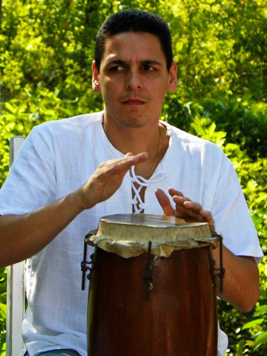

A dissertação
Capoeiras e valentões na história de São Paulo (1830–1930) é uma pesquisa sobre a história da capoeira em São Paulo, desenvolvida no Programa de Pós-graduação em História Social da Faculdade de Filosofia, Letras e Ciências Humanas da Universidade de São Paulo (USP), sob orientação da Prof.ª Dr.ª Maria Cristina Cortez Wissenbach, defendida em 2011.
A capoeira é uma arte marcial praticada no mundo inteiro por milhões de pessoas. Porém, sua história ainda é repleta de lacunas. Este estudo buscou preencher uma dessas lacunas, investigando o desenvolvimento da capoeira em território paulista e revelando aspectos até então pouco conhecidos da história de São Paulo.
A partir de fontes variadas como jornais, cartas, ofícios e leis, a pesquisa cruzou a prática da capoeira com os mais variados temas ao longo de quase 100 anos. Nas páginas desta pesquisa, os leitores encontrarão o envolvimento de professores e estudantes da Faculdade de Direito de São Paulo com valentões da capital paulista; a participação popular no movimento abolicionista que se espalhou pela província; e o processo que deu origem a escolas de samba e times de futebol paulistanos.
Por muito tempo, a história da capoeira se limitou ao eixo Salvador–Rio de Janeiro. Este trabalho busca ampliar essa visão, mostrando que a prática dessa arte marcial afro-brasileira chegou também ao interior e à capital de São Paulo.
Pedro Figueiredo Alves da Cunha · USP · 2011
O autor

Pedro Figueiredo Alves da Cunha
Pedro Cunha nasceu em Niterói/RJ em 1978 e mudou-se para Santos/SP em 1995, quando começou a praticar capoeira com Nilton Ribas Martins Jr., o Mestre Ribas, fundador do Grupo Capoeira Santista. Inspirado pelas aulas sobre História da Capoeira ministradas por Ribas, e por encontros com outros grandes mestres da Baixada Santista como Sombra, Parada, Bandeira, e mestres de outros estados, Pedro decidiu buscar mais informações sobre a capoeira em São Paulo no período da escravidão.
Formado em jornalismo (UniSantos, 1999), entrou no programa de Mestrado da USP em 2008 e, com orientação da professora Cris Wissenbach, encontrou um caminho para pesquisar algo que muitas pessoas diziam ser impossível pela falta de documentos históricos.
A dissertação publicada em 2011 mostrou que a pesquisa não só era possível, como necessária, para dar voz a grupos silenciados pela História, e cujos feitos não chegaram aos tempos atuais apesar da força da oralidade na cultura afro-brasileira.
Este portal tem o objetivo de ampliar essas vozes, para que mais pessoas possam conhecer as histórias descritas na dissertação ou acessar diretamente documentos digitalizados pelo autor durante sua pesquisa.
Licença e uso livre
Este portal é um projeto educativo, sem fins comerciais, hospedado no GitHub — plataforma de código aberto que garante acesso público, gratuito e permanente ao repositório. Todo o conteúdo pode ser reutilizado livremente para fins educativos, acadêmicos ou culturais, desde que a fonte seja citada.
Você pode usar, adaptar e redistribuir — inclusive para fins comerciais — desde que cite o autor e a fonte original.
Livre para usar, copiar, modificar e distribuir. Veja o arquivo LICENSE no repositório.
Imagens históricas (século XIX): Rugendas, Earle, Chamberlain e outros são obras em domínio público. Os documentos de arquivo são reproduzidos para fins educativos e de pesquisa; os acervos de origem estão identificados em cada item.
Dúvidas, sugestões ou interesse em colaborar? O repositório é público em github.com/pedrocunhagit/portal-capoeira-sp.